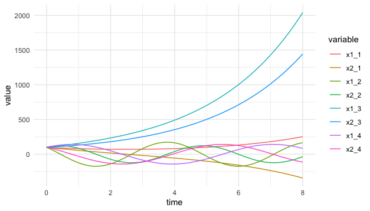
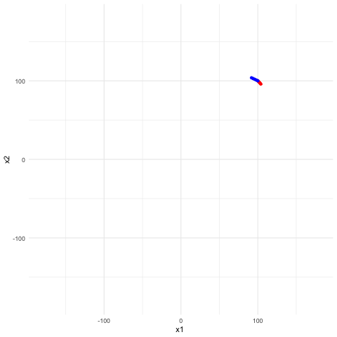
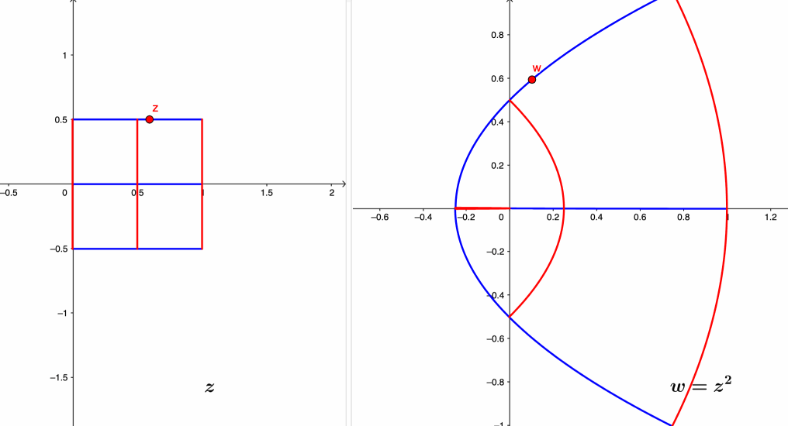
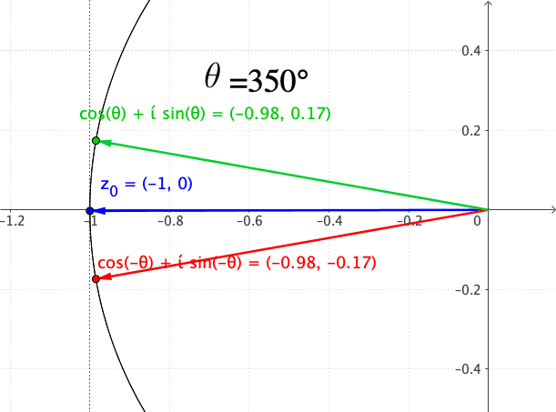
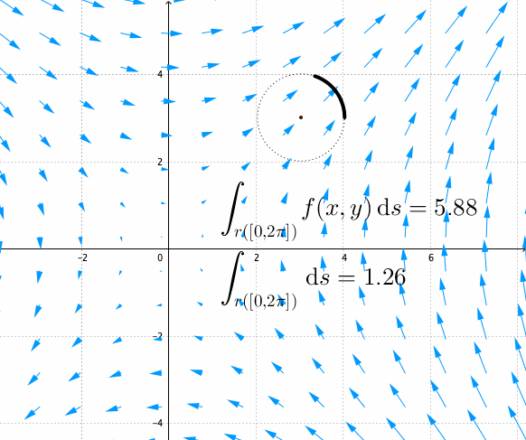

By viewing the war as an act of (the maximum use of) force, Clausewitz (2006) defined the war as a duel of imposing the will of one force onto its’ opponent(s).507 “I shall proceed from the simple to the complex. But in war more than in any other subject we must begin by looking at the nature of the whole; for here more than elsewhere the part and the whole must always be thought of together.” - Clausewitz (2006) Later a scientific simplification of Clausewitz’s duel stood out with the following form: \[\left[\begin{array}{c} \frac{\mbox{d}x_{1}(t)}{\mbox{d}t}\\ \frac{\mbox{d}x_{2}(t)}{\mbox{d}t} \end{array}\right]=\left[\begin{array}{cc} 0 & a_{12}\\ a_{21} & 0 \end{array}\right]\left[\begin{array}{c} x_{1}(t)\\ x_{2}(t) \end{array}\right]\tag{17.1}\] where \(x_{1}(t)\) and \(x_{2}(t)\) are the numbers of force units in the two sides at time \(t\), their derivatives represent the attrition rates, and the non-zero coefficient \(a_{i}\) represents the effective firing rate of a single force unit. You may not be surprised to see similar forms as equation (17.1) for modeling love affairs (Romeo and Juliet model), modeling Yin and Yang, or describing Newton’s laws in pendulums. So I suggest that we start our exposition of complexity from here.
Without any further restriction of variables \(x_1(t)\) and \(x_2(t)\), the system (17.1) is equivalent to a second-order differential equation of a single variable. The re-written system is508 One can check the equivalence by substituting \(a_{12}x_{2}=\mbox{d}x_{1}(t)/\mbox{d}t\) into the second order differentiation: \[\begin{align*}\frac{1}{a_{12}}\frac{\mbox{d}^{2}x_{1}(t)}{\mbox{d}t^{2}}&=\frac{1}{a_{12}}\frac{\mbox{d}}{\mbox{d}t}\left(a_{12}x_{2}(t)\right)\\ &=\frac{\mbox{d}x_{2}(t)}{\mbox{d}t}.\end{align*}\] The above result implies \(\mbox{d}x_{2}(t)/\mbox{d}t=a_{21}x_{1}(t)\). \[\frac{1}{a_{12}}\frac{\mbox{d}^{2}x_{1}(t)}{\mbox{d}t^{2}}-a_{21}x_{1}(t)=0.\] To understand the dynamics of this differential equation, we study the behavior of eigenvalues for the differentiation operator \(\mbox{d}(\cdot)/\mbox{d}t\). The characteristic polynomial of the eigenvalues is given by509 Recall that \[\begin{align*}(\frac{\mbox{d}}{\mbox{d}x_{1}})(v)=&\lambda v,\\ (\frac{\mbox{d}^2}{\mbox{d}x^2_{1}})(v)=&\lambda^2 v,\end{align*}\] under the eigenfunction \(v\). \[\frac{1}{a_{12}}\lambda^{2}-a_{21}=0.\] When \(a_{12}\neq a_{21}\), given the same initials \(x_1(0)=x_2(0)\), the equation \(\lambda^2 = a_{12}a_{21}\) provides three possible solution sets of the eigenvalues \(\lambda_1\) and \(\lambda_2\).510 Figure 17.1 shows the numerical demonstrations of four possible combinations of the coefficients pair \(a_{12}\) and \(a_{21}\): the pair have both negative signs, negative and positive signs, both positive signs, finally, positive and negative signs. When the signs are positive, the pair tend to form the wave curves; when both signs are positive, the pair both grow; when both signs are negative but have different values, the pair diverge, one growing and the other, with a bigger negative value, falling. Note that it is not possible to have simultaneous falling in this “magical” coupling structure.
When \(a_{12}, a_{21}>0\), we have \(\lambda_{1},\lambda_{2}>0\). One may expect that the system (17.1) has two simultaneously growing components \(x_1(t)\) and \(x_2(t)\).
When \(a_{12}, a_{21}\) have opposite signs, then \(\lambda^2<0\) implies both \(\lambda_{1}\) and \(\lambda_{2}\) contain the imaginary unit \(\mbox{i}\). In this case, one may expect to see some rotational dynamics of \(x_1(t)\) and \(x_2(t)\).511 One can compute the eigenvalues by solving the zero determinant of \(\mathbf{A}-\lambda\mathbf{I}\), which is \[\begin{align*}&\mbox{det}\left[\begin{array}{cc} -\lambda & a_{12}\\ a_{21} & -\lambda \end{array}\right]\\ &=\lambda^{2}-a_{12}a_{21}=0.\end{align*}\] Obviously, if \(a_{12}a_{21}<0\), namely \(a_{12}\) and \(a_{21}\) with oppositive signs, then the distinct roots of the characteristic function will contain the imaginary unit \(\mbox{i}\).
When \(a_{12}, a_{21}<0\), we have \(\lambda_{1},\lambda_{2}<0\). One may expect to see the monotonic patterns of both components. But due to the negativity, two components will move in the opposite direction. Suppose that \(\lambda_{2}<\lambda_{1}<0\), then \(x_{2}(t)\) is falling while \(x_{1}(t)\) is rising.
Figure 17.1: Possible dynamical patterns
Code
Perhaps, the most interesting patterns in these three cases (shown in figure 17.1) are the waves induced by the opposite signs of the coefficients in case 2. In this case, each pair of the coefficients induces two waves oscillating in a corresponding manner. These kinds of waves are said to be coupled. For example, let \[\mathbf{A}=\left[\begin{array}{cc} 0 & -2\\ 1 & 0 \end{array}\right].\] The eigenvalues of \(\mathbf{A}\) are \(\mbox{i}\sqrt{2}\) and \(-\mbox{i}\sqrt{2}\).512 The associated eigenvectors of \(\mbox{i}\sqrt{2}\) and \(-\mbox{i}\sqrt{2}\) could be, for example, \([\sqrt{2},-\mbox{i}]\) and \([\sqrt{2},\mbox{i}]\), respectively. In this case, we have \[ \begin{align*}\mathbf{V}=\left[\begin{array}{cc} \sqrt{2} & \sqrt{2}\\ -\mbox{i} & \mbox{i} \end{array}\right], \\ \mathbf{V}^{-1}=\frac{1}{\mbox{i}2\sqrt{2}}\left[\begin{array}{cc} \mbox{i} & -\sqrt{2}\\ \mbox{i} & \sqrt{2} \end{array}\right].\end{align*}\] A simple calculation leads to \(\mathbf{V}^{-1}\mathbf{A}\mathbf{V}=\mbox{diag}[\mbox{i}\sqrt{2},-\mbox{i}\sqrt{2}]\). The imaginary eigenvalues are of the same absolute sizes but different signs. This specification will make \(x_1(t)\) and \(x_2(t)\) travel on an ellipsoidal orbit in the phase plots, see figure 17.2. Therefore, the two equations are coupled.513 If the entities’ signs exchange, namely \(a_{12}>0\) and \(a_{21}<0\), a similar movement pattern will occur, but the rotation will be oriented in the opposite direction.
Figure 17.2: Phase plot of coupled waves (the second and the fourth curves in the previous figure)
We can almost confirm that the waves or the ellipses in the figures are induced by the imaginary unit \(\mbox{i}\) that emerges in the coupling structure.
We can decompose any \(2\times2\) matrix \(\mathbf{A}\) into \[\left[\begin{array}{cc} a_{11} & 0\\ 0 & a_{22} \end{array}\right]+\left[\begin{array}{cc} 0 & a_{12}\\ a_{12} & 0 \end{array}\right]\] a diagonal matrix and an off-diagonal matrix. The diagonal matrix will induce a decoupling system of two independent differential equations with the possibilities of growth \(a_{ii}>0\), decay \(a_{ii}<0\), or equilibrium \(a_{ii}=0\). In contrast, the off-diagonal one will cause dependence and will induce a system with three possible dynamical patterns listed above. Moreover, the coupled waves always come with \(a_{12}a_{21}<0\). Thus, we can roughly infer what its dynamics may look like for any system \(\mbox{d}\mathbf{x}(t)/\mbox{d}t=\mathbf{A}\mathbf{x}(t)\) with a \(2\times 2\) matrix \(\mathbf{A}\).
In chapter 12.1, we have seen that all the imaginary numbers with the absolute value \(1\) locate on a unit circle. The circle of the red orbit in figure 17.2 implies that the coupling structure of unit eigenvalues, i.e., \[\left[\begin{array}{cc} 0 & 1\\ -1 & 0 \end{array}\right]\, \mbox{ or } \left[\begin{array}{cc} 0 & -1\\ 1 & 0 \end{array}\right], \] can form the generator of the imaginary number.
Let’s extend this special coupling structure to a higher dimension. For any complex vector \(\mathbf{a}+\mbox{i}\mathbf{b}\) where \(\mathbf{a},\mathbf{b}\in\mathbb{R}^{n}\), let’s construct a \(2n\times 2n\) matrix by the block diagonal matrix \(\mathbf{I}_{2n}\) and off-diagonal matrix \(\mathbf{J}_{2n}\) to store the real and imaginary parts of the complex vector \(\mathbf{a}+\mbox{i}\mathbf{b}\): \[\underset{\mathbf{I}_{2n}}{\underbrace{\left[\begin{array}{cc} \mathbf{I} & \mathbf{0}\\ \mathbf{0} & \mathbf{I} \end{array}\right]}}\left[\begin{array}{c} \mathbf{a}\\ \mathbf{a} \end{array}\right],\,\,\underset{\mathbf{J}_{2n}}{\underbrace{\left[\begin{array}{cc} \mathbf{0} & \mathbf{I}\\ -\mathbf{I} & \mathbf{0} \end{array}\right]}}\left[\begin{array}{c} \mathbf{b}\\ \mathbf{b} \end{array}\right]\] where \(\mathbf{I}\) is the \(n\times n\) identity matrix. It turns out that this construction will allow us to map any complex vector in \(\mathbb{C}^{n}\) to some real-valued vector in a subspace of \(\mathbb{R}^{2n}\) without losing the algebraic structure of \(\mathbb{C}^{n}\).
Consider two complex vectors \(\mathbf{z}=\mathbf{x}_{1}+\mbox{i}\mathbf{x}_{2}\), and \(\mathbf{w}=\mathbf{y}_{1}+\mbox{i}\mathbf{y}_{2}\), with \(\mathbf{z},\mathbf{w}\in\mathbb{C}^{n}\). If we want to treat them as real (column) vectors \([\mathbf{x}_{1},\mathbf{x}_{2}]\) and \([\mathbf{y}_{1},\mathbf{y}_{2}]\) in \(\mathbb{R}^{2n}\), we need to make sure the inner product of these vectors in \(\mathbb{R}^{2n}\) preserves the algebraic structure of the complex inner product used in \(\mathbb{C}^{n}\). The following equivalent relation shows that the inner product structure is indeed preserved:514 Technically speaking, the symbol “\(\Leftrightarrow\)” should be intepreted as homeomorphism; that is, there is is a one-to-one, onto, and continuous mapping with an inverse that is also continuous. The following expression shows that such a mapping exists \[\begin{align*}\langle\mathbf{z},\mathbf{w}\rangle&=\mathbf{z}^{\mbox{H}}\mathbf{w}=\overline{\mathbf{z}}^{\top}\mathbf{w}\\ &=(\mathbf{x}_{1}-\mbox{i}\mathbf{x}_{2})^{\top}(\mathbf{y}_{1}+\mbox{i}\mathbf{y}_{2}) \\&= (\mathbf{x}_{1}^{\top}\mathbf{y}_{1}+\mathbf{x}_{2}^{\top}\mathbf{y}_{2})+\mbox{i}(\mathbf{x}_{1}^{\top}\mathbf{y}_{2}-\mathbf{x}_{2}^{\top}\mathbf{y}_{1})\\ &= \left[\begin{array}{c} \mathbf{x}_{1}\\ \mathbf{x}_{2} \end{array}\right]^{\top}\left[\begin{array}{cc} \mathbf{I} & \mathbf{0}\\ \mathbf{0} & \mathbf{I} \end{array}\right]\left[\begin{array}{c} \mathbf{y}_{1}\\ \mathbf{y}_{2} \end{array}\right]\\&+\mbox{i}\left[\begin{array}{c} \mathbf{x}_{1}\\ \mathbf{x}_{2} \end{array}\right]^{\top}\left[\begin{array}{cc} \mathbf{0} & \mathbf{I}\\ -\mathbf{I} & \mathbf{0} \end{array}\right]\left[\begin{array}{c} \mathbf{y}_{1}\\ \mathbf{y}_{2} \end{array}\right] \\&= \left[\begin{array}{c} \mathbf{x}_{1}\\ \mathbf{x}_{2} \end{array}\right]^{\top}\left(\mathbf{I}_{2n}+\mbox{i}\mathbf{J}_{2n}\right)\left[\begin{array}{c} \mathbf{y}_{1}\\ \mathbf{y}_{2} \end{array}\right].\end{align*}\] \[\langle\mathbf{z},\mathbf{w}\rangle\Leftrightarrow\left(\left[\begin{array}{c} \mathbf{x}_{1}\\ \mathbf{x}_{2} \end{array}\right]^{\top}\mathbf{I}_{2n}\left[\begin{array}{c} \mathbf{y}_{1}\\ \mathbf{y}_{2} \end{array}\right],\,\, \left[\begin{array}{c} \mathbf{x}_{1}\\ \mathbf{x}_{2} \end{array}\right]^{\top}\mathbf{J}_{2n}\left[\begin{array}{c} \mathbf{y}_{1}\\ \mathbf{y}_{2} \end{array}\right]\right)\in\mathbb{R}^{2}.\] In particular, the sandwich form induced by \(\mathbf{J}_{2n}\) corresponds to the multiplication that happened on the imaginary part of \(\mathbf{z}\) and \(\mathbf{w}\). Thus, one can think that the coupling matrix \(\mathbf{J}_{2n}\) encodes the multiplication operation of the imaginary numbers in the matrix form.
The previous equivalent relation reveals a more important (and perhaps magical) possibility. If any vector in \(\mathbb{C}^{n}\) has the corresponding entity in \(\mathbb{R}^{2n}\), the relation points out that a converse route is also possible. That is, when we have one real-valued subspace \(\mathcal{V}\) in \(\mathbb{R}^{n}\), we may be able to fabricate a “complex-looking” subspace in \(\mathbb{C}^{n}\) by making use of the coupling structure induced by \(\mathbf{J}_{2n}\in\mathbb{R}^{2n}\). The trick is known as complexification. The complexification of \(\mathcal{V}\subset\mathbb{R}^{n}\) based on \(\mathbf{J}_{2n}\), denoted by the \(\mathcal{V}_{\mathbb{C}}\), is a direct sum: \[\mathcal{V}_{\mathbb{C}}=\mathcal{V}+\mbox{i}\mathcal{V}=\mathcal{V}+\mathbf{J}_{2n}\mathcal{V}\] where the notations \(\mbox{i}\mathcal{V}\) and \(\mathbf{J}_{2n}\mathcal{V}\) refer to the same subspace. In this subspace, any object is constructed by multiplying the matrix \(\mathbf{J}_{2n}\) to two (replicated) objects from \(\mathcal{V}\).
For any two real vectors \(\mathbf{x}_1\) and \(\mathbf{x}_2\) in \(\mathcal{V}\subset\mathbb{R}^{n}\), the following equation \[\mathbf{I}_{2n}\left[\begin{array}{c} \mathbf{x}_{1}\\ \mathbf{x}_{2} \end{array}\right]+\mathbf{J}_{2n}\left[\begin{array}{c} \mathbf{x}_{1}\\ \mathbf{x}_{2} \end{array}\right]=\left[\begin{array}{c} \mbox{Re}(\mathbf{z})+\mbox{Im}(\mathbf{z})\\ \mbox{Im}(\mathbf{z})-\mbox{Re}(\mathbf{z}) \end{array}\right]\tag{17.2}\] gives a complexification of \(\mathcal{V}\), where \(\mathbf{z}\in \mathcal{V}_{\mathbb{C}}\subset\mathbb{C}^{n}\) is the corresponding complex vector.515 Here \(\mbox{Re}(\mathbf{z})\) and \(\mbox{Im}(\mathbf{z})\) stand for the real and imaginary parts of the complex vector \(\mathbf{z}\). Note that for \(\mathbf{z}=\mathbf{x}_1 +\mbox{i}\mathbf{x}_2\), we have \[\mathbf{x}_{1}=\mbox{Re}(\mathbf{z})=\frac{\mathbf{z}+\bar{\mathbf{z}}}{2}\\ \mathbf{x}_{2}=\mbox{Im}(\mathbf{z})=-\mbox{i}\frac{\mathbf{z}-\bar{\mathbf{z}}}{2}.\] So the equation also implies \[\begin{align*} &\mathbf{I}_{2n}\left[\begin{array}{c} \mathbf{x}_{1}\\ \mathbf{x}_{2} \end{array}\right]+\mathbf{J}_{2n}\left[\begin{array}{c} \mathbf{x}_{1}\\ \mathbf{x}_{2} \end{array}\right]\\&= \left[\begin{array}{c} \mathbf{x}_{1}+\mathbf{x}_{2}\\ \mathbf{x}_{2}-\mathbf{x}_{1} \end{array}\right]\\&= \left[\begin{array}{c} \frac{\mathbf{z}+\overline{\mathbf{z}}-\mbox{i}(\mathbf{z}-\overline{\mathbf{z}})}{2}\\ \frac{\mathbf{z}+\overline{\mathbf{z}}+\mbox{i}(\mathbf{z}-\overline{\mathbf{z}})}{2} \end{array}\right].\end{align*}\]
An important feature of this complexification is the invariance of the norm: \[\|\mathbf{z}\|^2=\langle\mathbf{z},\mathbf{z}\rangle=\left[\begin{array}{c} \mathbf{x}_{1}\\ \mathbf{x}_{2} \end{array}\right]^{\top}\left(\mathbf{I}_{2n}+\mbox{i}\mathbf{J}_{2n}\right)\left[\begin{array}{c} \mathbf{x}_{1}\\ \mathbf{x}_{2} \end{array}\right]=\left[\begin{array}{c} \mathbf{x}_{1}\\ \mathbf{x}_{2} \end{array}\right]^{\top}\left[\begin{array}{c} \mathbf{x}_{1}\\ \mathbf{x}_{2} \end{array}\right].\] The invariance comes from the fact that for any vector \(\mathbf{x}_{1},\mathbf{x}_{2}\in\mathbb{R}^{n}\), \[\begin{align*} \left[\begin{array}{c} \mathbf{x}_{1}\\ \mathbf{x}_{2} \end{array}\right]^{\top}\mathbf{J}_{2n}\left[\begin{array}{c} \mathbf{x}_{1}\\ \mathbf{x}_{2} \end{array}\right]=\left[\begin{array}{cc} \mathbf{x}_{2}, & -\mathbf{x}_{1}\end{array}\right]\left[\begin{array}{c} \mathbf{x}_{1}\\ \mathbf{x}_{2} \end{array}\right]=0.\end{align*}\] Such a property is often called reciprocity because the coupling structure of \(\mathbf{J}_{2n}\) tends to intertwine two types of vectors from \(\mathcal{V}\) for cancelling out the sum.516 The sandwich form \(\mathbf{a}^{\top}\mathbf{J}\mathbf{b}\) defines an inner \(\langle\mathbf{a},\mathbf{b}\rangle_{\mathbf{J}}\) known as the standard symplectic inner product. An inner product vector space attached with the symplectic inner product is called the symplectic vector space. Several natural phenomena can be described in the symplectic vector space, such as electromagnetism reciprocity or force-energy reciprocity. The quadratic form \(\langle\mathbf{x},\mathbf{x}\rangle_{\mathbf{J}}\) often represents the energy at state \(\mathbf{x}\) under the action \(\mathbf{J}\). The zero value of \(\langle\mathbf{x},\mathbf{x}\rangle_{\mathbf{J}}\) means that zero-energy creates or disappears in this reciprocal system.
This reciprocal coupling property actually is from a special symmetry, called skew symmetry. We define it as follows. For any square matrix defined on the scalar field \(\mathbb{F}\), i.e., \(\mathbf{J}_s\in\mathbb{F}^{k\times k}\), the following statements are equivalent:517 We can see that, the standard simpletic inner induced by \(\mathbf{J}\) is a special case of the skew symmetry.
Proof
In particular, for any \(\mathbf{x}\in\mathbb{R}^{k}\), when the reciprocity happens, namely \(\langle\mathbf{J}_s\mathbf{x},\mathbf{x}\rangle=0\), there must be \(\mathbf{J}_s+\mathbf{J}_s^{\top}=0\).519 To see this argument, note that \[\begin{align*} 0&=\langle\mathbf{J}_s(\mathbf{x}+\mathbf{y}),\,\mathbf{x}+\mathbf{y}\rangle\\&=\langle\mathbf{J}_s\mathbf{x},\,\mathbf{x}\rangle+\langle\mathbf{J}_s\mathbf{y},\,\mathbf{y}\rangle\\ &+\langle\mathbf{J}_s\mathbf{x},\,\mathbf{y}\rangle+\langle\mathbf{J}_s\mathbf{y},\,\mathbf{x}\rangle\\&=0+0+\langle\mathbf{J}_s\mathbf{x},\,\mathbf{y}\rangle+\langle\mathbf{J}_s\mathbf{y},\,\mathbf{x}\rangle.\end{align*}\] Because \[\langle\mathbf{J}_s\mathbf{y},\,\mathbf{x}\rangle=\langle \mathbf{x},\,\mathbf{J}_s\mathbf{y}\rangle=\langle\mathbf{J}_s^{\top}\mathbf{x},\,\mathbf{y}\rangle,\] the result follows.
For the dynamical system (17.1), coupling the skew-symmetry objects is the reason for having the invariants.520 These invariants are called the Hamiltonian. We will come back to them at [?]. Consider \(n\)-dimensional variables, \(\mathbf{x}_{1}(t)\) and \(\mathbf{x}_{2}(t)\), \(\mathbf{x}_{i}(t)\in\mathbb{F}^{n}\) and \(\mathbf{A}_{i}\in\mathbb{F}^{n\times n}\) for \(i=1,2\). The coupling system \[\left[\begin{array}{c} \frac{\mbox{d}\mathbf{x}_{1}(t)}{\mbox{d}t}\\ \frac{\mbox{d}\mathbf{x}_{2}(t)}{\mbox{d}t} \end{array}\right]=\underset{J_{s}}{\underbrace{\left[\begin{array}{cc} 0 & \mathbf{A}\\ -\mathbf{A}^{\mbox{H}} & 0 \end{array}\right]}}\left[\begin{array}{c} \mathbf{x}_{1}(t)\\ \mathbf{x}_{2}(t) \end{array}\right]\] is invariant with respect to \(\langle \mathbf{x}_{1}(t),\mathbf{x}_{2}(t)\rangle\), namely \[\left\langle \mathbf{x}_{1}(t),\mathbf{x}_{2}(t)\right\rangle =\left\langle \mathbf{x}_{1}(0),\mathbf{x}_{2}(0)\right\rangle\] for any \(t\in\mathbb{R}\).521 Both systems in figure 17.2 are somehow skew symmetry, so the objects only travel on the invariants orbits. Let \(\alpha=(a_{21}a_{12})^{\frac{1}{2}}\). After diagonalization, the complex diagonal matrix in \(\mathbb{C}^{2\times2}\) \[\left[\begin{array}{cc} \mbox{i}\alpha & 0\\ 0 & -\mbox{i}\alpha \end{array}\right]\] is equivalent to \[\left[\begin{array}{cccc} 0 & \alpha\\ -\alpha & 0\\ & & 0 & -\alpha\\ & & \alpha & 0 \end{array}\right]\] a skew-symmetric matrix in \(\mathbb{R}^{4\times4}\).
Proof
The skew symmetry or the reciprocity gives an orthogonality condition under \(\mathbf{J}_s\): \[\langle\mathbf{J}_{s}\mathbf{x},\,\mathbf{x}\rangle=0.\] Note that for any \(\mathbf{x}\in\mathcal{V}\), the vector \(\mathbf{J}_s\mathbf{x}\in\mathcal{V}^{*}\) is from the dual space of \(\mathcal{V}\). The condition inspires us that for any real-valued vector space \(\mathcal{V}\subset\mathbb{R}^{n}\), there would be a class of linear transformations \(\mathbf{J}_s\) that can define a dual subspace \(\mathcal{V}^{*}\) that is orthogonal to \(\mathcal{V}\), namely \(\mathcal{V}^{*}=\mathcal{V}^{\bot}\). In this case, the complexification based on \(\mathbf{J}_s\) can construct an orthogonal direct sum such that \[\mathcal{V}_{\mathbb{C}}=\mathcal{V}+\mathbf{J}_{s}\mathcal{V}=\mathcal{V}\oplus\mathcal{V}^{*}.\]
Let’s illustrate such a complexification by the following examples. Suppose a matrix \(\mathbf{A}\in\mathbb{R}^{m\times n}\) and a vector \(\mathbf{b}\in \mathbb{R}^{m}\). Our problem is to solve the system \(\mathbf{A}\mathbf{x}=\mathbf{b}\) with the unknown vector \(\mathbf{x}\in \mathbb{R}^{n}\). We know the orthogonal condition of this problem is \(\mathbf{A}^{\top}\mathbf{A}\mathbf{x}=\mathbf{A}^{\top}\mathbf{b}\). The complexification of this condition gives the following system \[\left[\begin{array}{cc} \mathbf{I} & \mathbf{A}\\ -\mathbf{A}^{\top} & \mathbf{I} \end{array}\right]\left[\begin{array}{c} \mathbf{\lambda}\\ \mathbf{x} \end{array}\right]=\left[\begin{array}{c} \mathbf{b}\\ \mathbf{x} \end{array}\right]\] where \(\mathbf{\lambda}\), according to the reciprocal requirement, is orthogonal to \(\mathbf{A}^{\top}\) such that \(\mathbf{A}^{\top}\mathbf{\lambda}=\mathbf{0}\). The multiplication \(\mathbf{A}^{\top}\mathbf{\lambda}=\mathbf{0}\) is often knowns as the Lagrangian condition, and \(\mathbf{\lambda}\) is called the Lagrangian multiplier. We can see that \(\mathbf{\lambda}\) is also the residual of \(\mathbf{\lambda}+\mathbf{A}\mathbf{x}=\mathbf{b}\).522 This is just another way to state the orthogonal condition. Substituting \(\mathbf{\lambda}=\mathbf{b}-\mathbf{A}\mathbf{x}\) into \(\mathbf{A}^{\top}\mathbf{\lambda}=\mathbf{0}\) gives \[\mathbf{A}^{\top}(\mathbf{b}-\mathbf{A}\mathbf{x})=0,\] which is the original orthogonal condition \[\mathbf{A}^{\top}\mathbf{A}\mathbf{x}=\mathbf{A}^{\top}\mathbf{b}.\]
The complexified problem can be decomposed into \[\left[\begin{array}{cc} \mathbf{I} & 0\\ 0 & \mathbf{I} \end{array}\right]\left[\begin{array}{c} \mathbf{\lambda}\\ \mathbf{x} \end{array}\right]+\underset{\mathbf{J}_s}{\underbrace{\left[\begin{array}{cc} 0 & \mathbf{A}\\ -\mathbf{A}^{\top} & 0 \end{array}\right]}}\left[\begin{array}{c} \mathbf{\lambda}\\ \mathbf{x} \end{array}\right]=\left[\begin{array}{c} \mathbf{b}\\ \mathbf{x} \end{array}\right].\] The skew symmetry matrix \(\mathbf{J}_s\) above plays the same role as \(\mathbf{J}_{2n}\) in the previous complexification (17.2). Intuitively, the new system complexifies the vector \(\mathbf{x}\in\mathbb{R}^{n}\) to the new vector \(\mathbf{z}=[\mathbf{\lambda},\mathbf{x}]\in\mathbb{R}^{n+m}\) so that the corresponding “complex” vector of \(\mathbf{I}_{n+m}\mathbf{\mathbf{z}}+\mathbf{J}_{s}\mathbf{z}\) is \([\mathbf{b},\mathbf{x}]\). Thus, solving the original system and solving the complexified one are essentially equivalent.523 This complexified system casts the original least square problem in the form of a square linear system. It provides a possibility to set up an iterative computational scheme when the inversion of \(\mathbf{A}^{\top}\mathbf{A}\) is too costly, i.e., \(\mathbf{A}\) is an extremely large matrix.
The previous example may look trivial. Before you doubt the impact of the complexification, I should propose a more tricky problem. Still, let’s consider solving the system \(\mathbf{A}\mathbf{x}=\mathbf{b}\) for \(\mathbf{A}^{m\times n}\), \(\mathbf{b}\in \mathbb{R}^{m}\) with the unknown vector \(\mathbf{x}\in \mathbb{R}^{n}\). However, this time the solution \(\mathbf{x}\) should satisfy an additional linear constraint \(\mathbf{B}\mathbf{x}=\mathbf{d}\) for a given matrix \(\mathbf{B} \in\mathbb{R}^{k\times n}\) and a given vector \(\mathbf{d}\in\mathbb{R}^{k}\). The complexification system is \[\left[\begin{array}{ccc} \mathbf{I} & \mathbf{0} & \mathbf{0}\\ \mathbf{0} & \mathbf{I} & \mathbf{0}\\ \mathbf{0} & \mathbf{0} & \mathbf{I} \end{array}\right]\left[\begin{array}{c} \mathbf{x}\\ \lambda_{1}\\ \lambda_{2} \end{array}\right]+\underset{\mathbf{J}_s}{\underbrace{\left[\begin{array}{ccc} 0 & \mathbf{A}^{\top} & \mathbf{B}^{\top}\\ -\mathbf{A} & 0 & \mathbf{0}\\ -\mathbf{B} & \mathbf{0} & 0 \end{array}\right]}}\left[\begin{array}{c} \mathbf{x}\\ \lambda_{1}\\ \lambda_{2} \end{array}\right]=\left[\begin{array}{c} \mathbf{x}\\ -\mathbf{b}\\ \mathbf{0} \end{array}\right],\] where \(\mathbf{\lambda}_1\), \(\mathbf{\lambda}_2\) are the Lagrangian multipliers for the reciprocal conditions \[\mathbf{A}^{\top}\lambda_{1}+\mathbf{B}^{\top}\mathbf{\lambda}_{2}=\mathbf{0},\,\,\,\, \mathbf{A}^{\top}\lambda_{1}=\mathbf{0}.\] These two conditions can be merged into one524 Note that the second reciprocal condition \(\mathbf{A}^{\top}\mathbf{\lambda}_{1}=\mathbf{0}\) implies \[\mathbf{A}\mathbf{x}-\lambda_{1}=\mathbf{b}.\] Substituting this expression into the first reciprocal condition \[\mathbf{A}^{\top}\lambda_{1}+\mathbf{B}^{\top}\mathbf{\lambda}_{2}=\mathbf{0},\] we have the result. In practice, this orthogonal condition often comes from the optimization of the following objective function \[f(\mathbf{x},\mathbf{\lambda}_{2})=\frac{1}{2}\|\mathbf{A}\mathbf{x}-\mathbf{b}\|^2 +(\mathbf{c}-\mathbf{B}\mathbf{x})^{\top}\mathbf{\lambda}_2.\] The gradient of \(f(\mathbf{x},\mathbf{\lambda}_{2})\) is exactly the modified reciprocal condition: \[\frac{\partial f(\mathbf{x},\mathbf{\lambda}_{2})}{\partial\mathbf{x}}=\mathbf{A}^{\top}(\mathbf{A}\mathbf{x}-\mathbf{b})-\mathbf{B}^{\top}\mathbf{\lambda}_{2}.\] \[\mathbf{A}^{\top}\mathbf{A}\mathbf{x}-\mathbf{A}^{\top}\mathbf{b}-\mathbf{B}^{\top}\mathbf{\lambda}_{2}=0.\] This new orthogonal condition incorporates the information from the linear constraint. Therefore, solving the square linear complexification system will give the solution of the constrained least square problem. One can even think the foundation of equilibrium analyses lurks in this complexification.
Generally speaking, the complexification idea tells that for every real-valued vector space \(\mathcal{V}\), it is possible to construct a dual subspace \(\mathcal{V}^{*}\) in which one can place the “imaginary” dual(s). Especially when the dual subspace corresponds to \(\mathcal{V}\) in a “rigid” sense, i.e., orthogonality, additional invariants may emerge.
We have seen the connection between complex variables/vectors with the real-valued ones. The connection goes through the skew symmetry, by which a complex variable can be viewed as nothing but a pair of real variables. Given this connection, you may have a sense that a function of a complex variable \(z\) is nothing but a function of two real variables preserving some degrees of the skew symmetry of \(z\). This point of view will help us to develop the notion of calculus for complex functions. But in general, it worths knowing that the connection between complex functions and real-valued ones often goes weird because the concept of order in the real number system does not carry over to the complex one. Some things that we take for granted as impossible in real analysis, such as negative \(\mbox{e}^{z}\) and \(|\cos z|>1\) for \(z\in \mathbb{R}\), are perfectly correct and ordinary when \(z\) becomes a complex variable.
Complex functions
Let a complex function be a map \(f:\,\mathbb{C}\rightarrow\mathbb{C}\). If \(w=f(z)\) is a complex function, then the image of a complex number \(z=x+\mbox{i}y\) under \(f\) is another complex number \(w=u+\mbox{i}v\). Thus, each complex function lies in a four-dimensional real-valued space \((u,v,x,y)\in\mathbb{R}^{4}\). It is not easy to imagine the shape of this complex relation in \(\mathbb{R}^{4}\). To understand the relation, we seek to express the input and the output in \(\mathbb{R}^2\) separately.
Figure 17.3: Complex mapping of the squaring function
Since every complex number consists of two real numbers, for any complex function \(f:\,\mathbb{C}\rightarrow\mathbb{C}\), we should be able to express \(f(z)\) in terms of two real functions\[f(z)=f(x+\mbox{i}y)=u(x,y)+\mbox{i}v(x,y)=w.\] This expression is called complex mapping.525 The real and imaginary parts of \(w\), namely \(u\) and \(v\) drawn from a real plane indexed by \(u\) and \(v\), are real-valued functions in terms of the real-valued inputs \(x\) and \(y\) that are drawn from another plane indexed by \(x\) and \(y\). By this expression, every complex function \(f(z)\) is completely determined by two real functions \(u\) and \(v\). For example, the complex function \(w=f(z)=z^{2}\) can be expressed as \[w=u+\mbox{i}v=(x+\mbox{i}y)^{2}=\underset{u}{\underbrace{x^{2}-y^{2}}}+\mbox{i}(\underset{v}{\underbrace{2xy}}).\]
The geometric interpretation of complex mapping considers the complex function \(f(\cdot)\) as the correspondence between some input and the output sets. Following the previous example, if we fix the input set to the vertical line \(x=1\) on the real plane of \((x,y)\), then the output set of the complex function \(w=z^{2}\) will be a parabola curve on the real plane of \((u,v)\).526 Note that for the complex function \(w=z^{2}\), the real and imaginary parts of \(w\) are the real functions \(u(x,y)=x^{2}-y^{2}\) and \(v(x,y)=2xy\). So the output image of the verticle line is on the set of functions \(u(1,y)=1-y^{2}\) and \(v(1,y)=2y\) for \(y\in\mathbb{R}\). By substitute \(y=v/2\) into \(u=1-y^{2}\), we can eliminate \(y\) to find an expression of only \(u\) and \(v\): \[u=1-\left(\frac{v}{2}\right)^{2}=1-\frac{v^{2}}{4},\] which is a parabola curve. The red curves in figure 17.3 give this correspondence at \(z=1+y\mbox{i}\), \(z=\frac{1}{2}+y\mbox{i}\), and \(z=y\mbox{i}\) for \(y\in[-\frac{1}{2},\frac{1}{2}]\). Meanwhile, if we fixed the input set on the horizontal line \(y=1/2\), we have \[u\left(x,\frac{1}{2}\right)=x^{2}-\frac{1}{4},\\ v\left(x,\frac{1}{2}\right)=x.\] Substituting \(v=x\) into \(u=x^{2}-\frac{1}{4}\), we have \[u=v^{2}-\frac{1}{4}.\] The blue curves in figure 17.3 give this correspondence at \(z=x+\frac{1}{2}\mbox{i}\), \(z=x-\frac{1}{2}\mbox{i}\), and \(z=x\) for \(x\in[-\frac{1}{2},\frac{1}{2}]\).
A better understanding of the correspondence in the complex mapping needs some parameterization. For example, the synchronic movements on the input and the output planes in figure 17.3 assist in visualizing the exact relationship of \(w=z^2\) for six lines/curves. The synchronization process is often facilitated by the parameterization of the input and output curves by the time parameter \(t\). On the input plane, if we can parametrize a curve of \(z\) as a dynamical path \(z(t)\) for \(t\in[a,b]\), then on the output plane, we will have the parameterized \(w(t)=f(z(t))\) for \(t\in[a,b]\).527 We will give a detailed discussion about this parameterization when we consider the complex integral.
You may notice that despite a simple form, the complex squaring function behaves quite differently from the real-valued one. To better understand how such a complex correspondence comes out, we should view the complex function differently. Let’s turn to the polar representation \(z=|z|\mbox{e}^{\mbox{i}\theta}\). Like \(z=a+\mbox{i}b\), the polar representation of \(z\) also consists of two parts, the real part \(|z|\in\mathbb{R}\) and the imaginary part \(\mbox{e}^{\mbox{i}\theta}\in\mathbb{C}\). For the imaginary part, the angle \(\theta\) is the argument of the function \(\mbox{e}^{\mbox{i}\theta}\). So we will use the symbol \(\theta=\arg(z)\) for \(z\in\mathbb{C}\).
One important message is that \(\theta=\arg(z)\) actually represents a set of values due to the periodic property of \(\mbox{e}^{\mbox{i}\theta}\). In other words, the function \(\arg(z)\) is a multiple-valued function that assigns a set of outputs for one input \(z\). Very often, we are only interested in one of these multiple values.528 If we make this choice of principal value with the concept of continuity in mind, we obtain a function called the branch of the multiple-valued function. In more rigorous terms, a branch of a multiple-valued function \(f\) is a “different” function that is continuous on some domain and that assigns exactly one of the multiple-values of \(f\) to each point \(z\) in the domain. The principal argument is called the branch function. For the argument \(\theta\) of \(z\) that lies in the interval \(-\pi<\theta\leq\pi\), we call it the principal argument of \(z\). The principal argument is unique and is represented by the symbol \(\mbox{Arg}(x)\); its relation with \(\arg(z)\) is given below \[-\pi<\mbox{Arg}(z)\leq\pi,\quad\arg(z)=\mbox{Arg}(z)+2n\pi,\] for \(n=0,\pm1,\pm2,\dots\).
Now let’s return to the complex squaring function. The polar representation of the function is given by \[w=z^{2}=|z|^2\mbox{e}^{\mbox{i}(2\theta)}=|z|^{2}\mbox{e}^{\mbox{i}\left(2\arg(z)\right)}.\] The squaring function squares not only the radius \(|z|\) but also the angle \(\mbox{arg}(z)\). In figure 17.3, we can see that a slight shift of the straight lines on the input plane corresponds to an amplification (the squaring effect) of the bending curves on the output plane.
More importantly, unlike its real-valued counterpart, the complex squaring function \(z^{2}\) is not one-to-one due to the multiple-valued function \(\arg(z)\). That is, we can construct a sequence \(z_{k}=|z|\mbox{e}^{\mbox{i}\mbox{Arg}(z)+\pi k}\) with \(k\in\mathbb{N}\) such that \(z_{k}^{2}=w\) while \(z_{k}\neq z\).529 For example, the movement on the red vertical line \(z=\mbox{i}y\) in figure 17.3 creates a corresponding periodic counterpart on the horizontal line \(w=u+\mbox{i}0=-y^2\). Thus, \(w=z^2\) cannot be one-to-one in \(\mathbb{C}\). The preceding discussion also implies that the complex function \(f(z)=z^{n}\), unlike the real-valued counterparts, generally does not have an inverse function because it is not one-to-one. The good news is that one can restrict the function’s domain to make the function behave like one-to-one. For \(f(z)=z^{2}\), if we restrict its domain to \(-\frac{\pi}{2}<\arg(z)\leq\frac{\pi}{2}\), then the function becomes one-to-one.530 In figure 17.3, except \(z=\mbox{i}y\), the other lines have one-to-one correspondences in the plane of \((u,v)\). For any \(z^{1/n}\) with \(n\in\mathbb{N}\), the principal \(n\)-th root function is defined by \[z^{\frac{1}{n}}=|z|^{\frac{1}{n}}\mbox{e}^{\mbox{i}\frac{\mbox{Arg}(z)}{n}}.\]
Continuity of complex functions
The notions of limit and continuity of real-valued functions are analogous to the concepts for complex functions. Let’s define complex limits using complex mapping. Let \(z_{0}=x_{0}+\mbox{i}y_{0}\). For the complex function \(f(z)=u(x,y)+\mbox{i}v(x,y)\), the complex limit at \(z_{0}\) is \[\lim_{z\rightarrow z_{0}}f(z)=u_{0}+\mbox{i}v_{0}\] if and only if \[\lim_{(x,y)\rightarrow(x_{0},y_{0})}u(x,y)=u_{0},\;\lim_{(x,y)\rightarrow(x_{0},y_{0})}v(x,y)=v_{0}.\] As you can see, the above definition of limits is analogous to the definition of limits for vector functions in \(\mathbb{R}^{2}\). According to this principle, many (linear) properties of complex limits coincide with the real-vector limits.531 For example, for complex functions \(f\) and \(g\), if \(\lim_{z\rightarrow z_{0}}f(z)=L\) and \(\lim_{z\rightarrow z_{0}}f(z)=M\), then \[1)\,\,\lim_{z\rightarrow z_{0}}cf(z)=cL\] for \(c\in\mathbb{C}\). \[2)\,\,\lim_{z\rightarrow z_{0}}\left(f(z)\pm g(z)\right)=L\pm M.\] \[3)\,\,\lim_{z\rightarrow z_{0}}f(z)g(z)=LM.\] \[4)\,\,\lim_{z\rightarrow z_{0}}\frac{f(z)}{g(z)}=\frac{L}{M}\] when \(M\neq0\).
The complex function \(f\) is continuous at a point \(z_{0}\in\mathbb{C}\) if the complex limit of \(f\) exists when \(z\) approaches \(z_{0}\) and if this limit is the same as the value of \(f\) at \(z_{0}\): \[\lim_{z\rightarrow z_{0}}f(z)=f(z_{0}).\] Important complex continuous functions in \(\mathbb{C}\) include polynomials, exponential functions, trigonometric functions, and compositions of continuous functions. Recall that these functions are also continuous in the real domain.
However, there is one significant difference between the continuity of the complex function \(f:\mathbb{C}\rightarrow\mathbb{C}\) (or \(f:\mathbb{R}^{n}\rightarrow\mathbb{R}^{m}\)) and the continuity of the function \(f:\mathbb{R}^{n}\rightarrow \mathbb{R}\). For real-valued functions \(f:\mathbb{R}^{n}\rightarrow \mathbb{R}\), we deal with limits at infinity, where the behavior of functions \(f(x)\) was examined as \(x\in\mathbb{R}\) either increased or decreased. Because for this \(x\), there are exactly two directions \(x\rightarrow\infty\) and \(x\rightarrow-\infty\). Since \(\mathbb{C}\) (or any vector \(\mathbb{R}^{m}\)) is not ordered, the notions of either “increasing” or “decreasing” \(z\) have no meaning. When we mention that \(z\) approaches \(z_0\), we need to pay attention to the approaching “direction.”532 For real vector \(\mathbf{x}\in\mathbb{R}^{m}\), the linear directional action of \(\mathbf{x}\) is a matrix transformation \(\mathbf{T}\in\mathbb{R}^{m\times m}\) mapping \(\mathbf{x}\) back to \(\mathbb{R}^{m}\), such as the rotation matrices or the scaling matrices in figure 11.2.
Note that for a unit ball \(|\mbox{e}^{\mbox{i}\theta}|=1\), there are infinite directions from the ball’s edge pointing to its center. Thus, for the complex number \(z=|z_0|\mbox{e}^{\mbox{i}\theta}\), there are infinitely many directions from which \(z\) can approach \(z_{0}\). For the existence of such a complex limit, each direction in which \(z\) can approach \(z_{0}\) must yield the same limiting value.
Figure 17.4: Approaching the point from two directions on the circle
For example, consider the complex function \(f(z)=z^{\frac{1}{2}}\). The function is discontinuous at \(z=0\). But it would be not so obvious to see that the function is also discontinuous at \(z=-1\).533 In fact, the discontinuity is caused by the branch point of the multiple-value function \(\arg(z)\). When \(|z|=1\), \[z=|z|\mbox{e}^{\mbox{i}\pi}=|z|\mbox{e}^{-\mbox{i}\pi}=-1+\mbox{i}0,\] so \((-1,0)\) is a branch point for the multiple-value function \(\arg(z)\). To examine this type of discontinuity, we can approach \(z=-1\) from different directions. Note that \(z=-1+\mbox{i}0\) corresponds to the point \((-1,0)\) on the \((x,y)\) plane. Given the radius \(|z|=1\), we can approach this point from above and from below (see figure 17.4); their polar representations of the limits are: \[\lim_{z\rightarrow-1}z^{\frac{1}{2}}=\lim_{z\rightarrow-1}|z|^{\frac{1}{2}}\mbox{e}^{\mbox{i}\frac{\mbox{arg}(z)}{2}}=\begin{cases} \lim_{\theta\rightarrow\pi}1\mbox{e}^{\mbox{i}\theta/2} & \mbox{ from above}\\ \lim_{\theta\rightarrow-\pi}1\mbox{e}^{\mbox{i}\theta/2} & \mbox{ from below} \end{cases}.\] By the Euler’s formula, we know that \[\lim_{z\rightarrow-1}z^{\frac{1}{2}}=\begin{cases} \lim_{\theta\rightarrow\pi}1\mbox{e}^{\mbox{i}\theta/2}=\cos\frac{\pi}{2}+\mbox{i}\sin\frac{\pi}{2} & =\mbox{i},\\ \lim_{\theta\rightarrow-\pi}1\mbox{e}^{\mbox{i}\theta/2}=\cos(-\frac{\pi}{2})+\mbox{i}\sin(-\frac{\pi}{2}) & =-\mbox{i}, \end{cases}\] so the limits do not coincide. We conclude the function is discontinuous at \(z=-1+\mbox{i}0\).
Complex derivatives and Cauchy-Riemann relation
The derivative of complex functions relies on the limit definition of the infinitesimal changes of this function. Similar to the results of real functions, if a function \(f\) is complex differentiable at a point, the function is necessarily continuous at the point.534 Also, the converse is not true. Complex continuity of a complex function \(f\) at a point does not guarantee that f is complex differentiable at that point. Many of these defined limits, such as the product, quotient, and chain rules of differentiation, are very similar to those for the real-vectors. But because of the directional requirement for approaching the limits, having a complex derivative is a far greater demand than having a real-valued one.
For a complex function \(f\), the complex differentiability at point \(z_{0}\) is about the existence of the complex limit \[\lim_{\Delta z\rightarrow0}\frac{f(z_{0}+\Delta z)-f(z_{0})}{\Delta z}\] regardless how \(\Delta z\) approaches \(0\).
Under the above definition of complex differentiation, many “common” functions are not differentiable on \(\mathbb{C}\). For example, \(f(z)=x+\mbox{i}(2y)\) is not differentiable at any point on \(z\in\mathbb{C}\).
Proof
Even though the requirement of complex differentiability is a stringent demand, there is a class of functions that is of great importance whose members satisfy even more severe requirements. These functions are called analytic functions.
Notice that analyticity is more stringent than simply complex differentiability at a point. For a complex function \(f(z)=u(x,y)+\mbox{i}v(x,y)\), even if they are complex differentiable at a point \(z\), the functions \(u\) and \(v\) must satisfy additional condition to be differentiable in the neighborhood of \(z_{0}\). Roughly speaking, this additional condition is a pair of equations called the Cauchy-Riemann equations/relation that relate to the first-order partial derivatives of \(u\) and \(v\):536 To have the equivalence between Cauchy-Riemann equations and analyticity, we need \(u(x,y)\) and \(v(x,y)\) to be continuous and to have their first-order partial derivatives. \[\frac{\partial u(x,y)}{\partial x}=\frac{\partial v(x,y)}{\partial y},\;\frac{\partial u(x,y)}{\partial y}=-\frac{\partial v(x,y)}{\partial x}.\]
When \(u(x,y)\) and \(v(x,y)\) are continuous and have first-order partial derivatives, Cauchy-Riemann equations are the necessary and sufficient criterion to guarantee the analyticity of the function \(f(z)=u(x,y)+\mbox{i}v(x,y)\).537 Note that Cauchy-Riemann equations only provide a necessary condition for the complex differentiability of \(f(z)=u(x,y)+\mbox{i}v(x,y)\). For example, \(f(z)=x+\mbox{i}(2y)\) is not complex differentiable as it doesn’t satisfy the Cauchy-Riemann relation \[\frac{\partial u}{\partial x}=1\neq \frac{\partial v}{\partial y}=4.\]
Sketch of the proof
The use of the neighborhood in analyticity relates to the purpose of preserving the skew-symmetric directions in the complex differentiation. To understand this statement, we let \[\left.\frac{\mbox{d}f}{\mbox{d}z}\right|_{z=z_{0}}=a+\mbox{i}b\] denote the differentiation of \(f(z)=u+\mbox{i}v\) at point \(z_0\in\mathbb{C}\). We can think of \(u+\mbox{i}v\) as a vector \(\mathbf{f}=[u,v]\). The analyticity of \(f(z)=u+\mbox{i}v\) at \(z_0\) basically means that around the neighborhood of \(z_0\), we can approximate \(\mathbf{f}\) by some linearization whose direction depends on the gradient that is a skew-symmetry matrix: \[\nabla\mathbf{f} = \left[\begin{array}{cc} \frac{\partial u}{\partial x} & \frac{\partial u}{\partial y}\\ \frac{\partial v}{\partial x} & \frac{\partial v}{\partial y} \end{array}\right]=\left[\begin{array}{cc} a & -b\\ b & a \end{array}\right].\] The Cauchy-Riemann equations are implicitly stated in the above equality.538 The equality implies \[\begin{align*}\frac{\partial u}{\partial y}=& -b=-\frac{\partial v}{\partial x}\\ \frac{\partial u}{\partial x}=&a=\frac{\partial v}{\partial y}.\end{align*}\]
Proof
Because of the preservation of skew symmetry, for an analytic function \(f\), the neighborhood of its complex differentiation must also be a complex field. So over such an open neighborhood, one must able to define the complex derivative of \(\mbox{d}f/\mbox{d}z\), namely the complex second-order derivatives of \(f\). Then we can iterate this argument up to infinite many times.539 The complex higher derivatives are defined in exactly the same manner as in real analysis. For example, \[\begin{align*}\frac{\partial f(z)}{\partial x} &=\frac{\partial u}{\partial x}+\mbox{i}\frac{\partial v}{\partial x},\\ \frac{\partial^2 f(z)}{\partial x^2}&=\frac{\partial^{2}u}{\partial x^{2}}+\mbox{i}\frac{\partial^{2}v}{\partial x^{2}}, \end{align*}\] and so on. Indeed, if a complex function \(f\) is analytic in a connected domain \(\Omega\), namely no breaks and holes in \(\Omega\), then this fact alone guarantees that \(f\) possesses higher-order derivatives at all points in \(\Omega\).540 A set \(\Omega\subset\mathbb{C}\) is disconnected if there exist nonempty sets \(\mathcal{A},\mathcal{B}\subset\mathbb{C}\) such that \[\overline{\mathcal{A}}\cap\mathcal{B}=\mathcal{A}\cap\overline{\mathcal{B}}=\emptyset\] and \(\Omega=\mathcal{A}\cup\mathcal{B}\). Here \(\overline{\mathcal{A}}\) is the closure of \(\mathcal{A}\), namely the smallest closed subset of \(\mathbb{C}\) containing \(\mathcal{A}\). If the set \(\Omega\subset\mathbb{C}\) is not disconnected, then it is connected. In fact, an analytic function \(f:\Omega\rightarrow\mathbb{C}\) is infinitely differentiable in \(\Omega\). The derivatives are also analytic functions in \(\Omega\).541 The \(n\)-th order derivative has the following form \[f^{(n)}(z_{0})=\frac{n!}{2\pi\mbox{i}}\int_{\gamma([a,b])}\frac{f(z)}{(z-z_{0})^{n+1}}\mbox{d}z\] where \(\gamma([a,b])\) is any simple closed curve lying entirely within \(\Omega\) and \(z_{0}\in\gamma([a,b])\). The expression can be derived by the Cauchy integral that will be explained below.
For a real-valued function, we know that if the function is infinitely differentiable, then it can be represented by a Talyor series, a special power series. For a complex function, since analyticity implies infinite differentiability, the analytic function can also be defined in terms of the power series.
Complex integrals
Many properties of the complex integrals are very similar to those of the real line integrals. The integration of complex functions in the complex plane closely resembles the integration of real functions in the two-dimensional plane. However, we need to carefully characterize the directions of those integral “lines” in two dimensions.
With the idea of using an ancillary parameter \(t\in[a,b]\) in complex mapping, we can define a continuous function \[\gamma(\cdot):[a,b]\rightarrow\Omega\subset\mathbb{C}\] as a path on a set \(\Omega\). The image set of this function, denoted by \(\gamma([a,b])\), becomes the curve in \(\Omega\), namely \(\gamma([a,b])\in \Omega\). The curve is said to be smooth if \(\gamma(t)\) has a continuous derivative on \([a,b]\). If \(\gamma(a)=\gamma(b)\), the curve is a closed curve or a closed contour. The integral \[\int_{\gamma([a,b])}\mbox{d}s=\int_{a}^{b}\frac{\mbox{d}\gamma(t)}{\mbox{d}t}\mbox{d}t<\infty\] gives the length of the path \(\gamma\), where \(\mbox{d}s\) stands for the differential of the arc length of the curve. In this manner, the complex integration of a function \(f(z)\) along a curve \(\gamma([a,b])\) is given by \[\begin{align*}\int_{\gamma([a,b])}f(z)\mbox{d}s&=\int_{a}^{b}f(z(t))\frac{\mbox{d}z(t)}{\mbox{d}t}\mbox{d}t\end{align*}\] where the variable of the second integration is the parameter \(t\).542 So parameterization reduces the integral problem from a two-dimensional curve to a one-dimensional path.
Let’s consider an example. Suppose we want to compute the integral of \(1/z\) on the unit circle centering at zero. This closed contour can be defined as \[\gamma([0,2\pi])=\left\{ z(t):\, z(t)=\mbox{e}^{\mbox{i}t}\right\}.\] Note that543 The differentiation of the complex exponential function is \[\begin{align*}\frac{\mbox{d}z(t)}{\mbox{d}t}&=\frac{\mbox{d}\cos t}{\mbox{d}t}+\mbox{i}\frac{\mbox{d}\sin t}{\mbox{d}t} \\ &=\sin(t) -\mbox{i}\cos(t)\\ &=\mbox{i}(\mbox{i}\sin(t)+\cos(t))=\mbox{i}\mbox{e}^{\mbox{i}t}. \end{align*}\] \[\begin{align*}\frac{\mbox{d}z(t)}{\mbox{d}t}=\mbox{i}\mbox{e}^{\mbox{i}t}, \, f(z(t))=\frac{1}{z(t)}=\mbox{e}^{-\mbox{i}t}.\end{align*}\] By using path integral, we have \[\int_{\gamma([0,2\pi])}\frac{1}{z}\mbox{d}z=\int_{0}^{2\pi}(\mbox{e}^{-\mbox{i}t})\mbox{i}\mbox{e}^{\mbox{i}t}\mbox{d}t=\mbox{i}\int_{0}^{2\pi}\mbox{d}t=2\pi\mbox{i}.\]
Figure 17.5: Fundamental theorem of the complex integral for the complex squaring function
Sketch of the proof
The above theorem gives us a very handy implication regarding the integrals over the closed curved or the closed contour. If the curve \(\gamma([a,b])\) is closed, namely the initial and the terminal points coincide \(z(a)=z(b)\) for \(z(t)\) with \(t\in[a,b]\), then the integral of any analytic function along this closed curve is zero.545 See figure 17.5 is about the integral of the complex squaring function. The background image assigns the vector \((u(x,y),v(x,y))\) to each \((x,y)\) at discrete points. The arrow depicts the vector \((u(x,y),v(x,y))\), and the length of the arrow depicts the norm of the vector. Note that the function exists everywhere on the plane, but the image only shows the vector values of the lattice. By the fundamental theorem of complex integral, we can see that \[\int_{\gamma([a,b])}f(z)\mbox{d}z=F(z(b))-F(z(a))=0.\] This is a fantastic result because it simply tells us the region inside any closed smooth curve is not important for the complex integration of analytics functions.546 In figure 17.5, \(f(z)=u+\mbox{i}v\) has \(u(x,y)=x^{2}-y^{2}\) and \(v(x,y)=2xy\). Note that \[\partial u/\partial x=2x=\partial v/\partial y\\ \partial u/\partial y=-2y=-\partial v/\partial v.\] The function satisfies the Cauchy-Riemann relation, so \(f(z)\) is an analytic function and the integral of \(f(z)\) over the any closed contour is zero. We should emphaisze the role of analyticity is necessary for this result. If the function is not analytic, e.g. having singularities, then the result does not hold. For example, the previous integral of \(1/z\) on the closed circle is non-zero because \(z=0\) is a singular point.
Finally, let’s return to the power series representation of an analytic function. Assume that \(f\) is an analytic function. We consider a closed smooth curve \(\gamma([a,b])\) covering point \(z_{0}\in\mathbb{C}\). Then, we can represent \(f(z_0)\) by \[f(z_{0})=\frac{1}{2\pi\mbox{i}}\int_{\gamma([a,b])}\frac{f(z)}{z-z_{0}}\mbox{d}z,\] where the right-hand side of the equality is called Cauchy integral. The integral is non-zero because \(z_{0}\in\mathbb{C}\) is a singular point for \(1/(z-z_0)\).547 The derivation of this integral is given below. The expansion of \(1/(z-z_0)\) gives \[\frac{1}{z-z_{0}}=\frac{1}{z(1-\frac{z_{0}}{z})}=\frac{1}{z}+\frac{z_{0}}{z^{2}}+\frac{z_{0}^{2}}{z^{3}}+\cdots.\] The representation based on the Cauchy integral becomes \[\begin{align*} f(z_0) &= \frac{1}{2\pi\mbox{i}}\int_{\gamma([a,b])}f(z)\left[\frac{1}{z}+\frac{z_{0}}{z^{2}}+\frac{z_{0}^{2}}{z^{3}}+\cdots\right]\mbox{d}z\\ &= \underset{c_{0}}{\underbrace{\frac{1}{2\pi\mbox{i}}\int_{\gamma([a,b])}\frac{f(z)}{z}\mbox{d}z}}+\underset{c_{1}z_{0}}{\underbrace{\left(\frac{1}{2\pi\mbox{i}}\int_{\gamma([a,b])}\frac{f(z)}{z^{2}}\mbox{d}z\right)z_{0}}}+\cdots\\ &= \sum_{k=0}^{\infty}c_{k}z_{0}^{k}. \end{align*}\] The representation tells us that any analytic function is a power series.548 For real functions, one can work with their ordering properties, such as maximum and minimum. The calculus of the real functions, therefore, pays a lot of attention to the instantaneous rate of changes that increase or decrease the functions. However, none of those tools carry much sense in complex calculus. In complex analysis, the primary concern is not what a derivative or an integral of a function is, but rather, it is whether a function \(f\) actually is analytic. The fact that a complex function \(f\) possesses analyticity tells us a lot about the function. This argument is also valid for the analytic function of several complex variables. For a multivariate complex function \(f(z_{1},\dots,z_{n})\), either one can define the function via a power series form, e.g., \[f(z_{1},\dots,z_{n})=\sum_{i_{1},\dots,i_{n}}c_{i_{1},\dots,i_{n}}z_{1}^{i_{1}}\cdots z_{n}^{i_{n}},\] or use \(n\)-pairs Cauchy-Riemann equations \[\frac{\partial u}{\partial x_{i}}=\frac{\partial v}{\partial y_{i}},\:\frac{\partial u}{\partial y_{i}}=-\frac{\partial v}{\partial x_{i}}\:\mbox{for }i=1,\dots n\] to define a system where the function \(f(z_{1,},\dots,z_{n})=u+\mbox{i}v\) is located.
Sketch of the proof
Page built: 2021-05-10